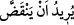
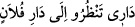

Duvar hakkında “__WORD__ Yürîdü en yenkadda (yıkılmak isteyen)” denilmiştir.
İrâde, nefsin bir şey hakkında bilfiil hüküm vererek veya hüküm vermeden bir tarafa
meylidir. Allah’ın irâdesi hüküm anlamınadır. Âyetteki ifâde, Arapça’da mecazi bir
ifâde tarzıdır. Çünkü duvarın iradesi yoktur. “Düşmeye yaklaştı, meyletti.” anlamınadır.
Bu Araplar arasında, birinin evi diğer kimsenin evinin karşısında ise: “__WORD__ Dârî tenzuru ilâ dâri fülân (Benim evim falanın evine bakıyor.)”
sözüne benzer.
el-İrşad’da şöyle der: Yâni yıkılmaya yaklaşıyordu. Burada ‘irâde’ yakın olmaktan
istiâre olarak bu hususta mübâlağaya delâlet etmesi için kullanılmıştır.
“(Hızır) hemen onu doğrulttu.” Rasûlullah (s.a.)’den rivâyet edildiğine göre Hızır
(a.s.), eliyle işaret ederek onu doğrulttu. Duvar yukarı doğru yüz arşın idi.
“Mûsâ” (a.s.), yemek ihtiyacından dolayı: “Dileseydin, elbet buna karşı bir ücret
alırdın, dedi.” Kâşifî der ki: “Mûsâ (a.s.): “Bu şehir halkı bize yer vermediler, yemek
de göndermediler. Neden onların duvarını tâmir ettin?” dedi.” Yâni, İsteseydin bu
ameline karşılık bir ücret taleb ederdin. Biz de onunla yiyecek satın alabilirdik.
Bazıları demiştir ki: Mûsâ (a.s.) “Halkını boğmak için mi?” dediği zaman Hızır
(a.s.): “Sen denizde değil miydin? (Bebekken Nil nehrine bırakılmadın mı?) Bir gemi
olmadığı halde boğulmadın.” karşılığını verdi. Mûsâ (a.s.)’ın: “Tertemiz bir canı, bir
can karşılığı olmaksızın (kimseyi öldürmediği halde) katlettin ha!” demesi üzerine de
Hızır (a.s.): “Sen günahsız olarak kıptîyi öldürmemiş miydin?” dedi. Yine Mûsâ (a.s.):
“Dileseydin, elbet buna karşı bir ücret alırdın” deyince Hızır (a.s.): “Sen, Şuayb
(a.s.)’ın kızları yerine (davarları) ücretsiz suladığını unuttun mu?” dedi. Bu, aralarında
cereyan eden latîf bir konuşmadır.
Kasım demiştir ki: “Mûsâ (a.s.), bu sözü söyleyince bir ceylan aralarında durdu. İkisi
de açtı. Mûsâ (a.s.)’ın tarafı kızarmamış, Hızır (a.s.)’ın tarafı ise kızarmıştı. Çünkü
Hızır (a.s.), bir karşılık beklemeden duvarı onarmış, Mûsâ (a.s.) ise onun bu işten ücret
almasını istemişti.”
İbn Abbas der ki: “İnsanın yaptığı işi nakledip ondan karşılık beklemesi amelini iptal
eder. Görmez misin ki Kelîmullah Mûsâ (a.s.), Hızır (a.s.)’a “Dileseydin...” dediği
zaman nasıl ondan ayrılmıştır.”
Cüneyd der ki: “Kalbleri tamahların zulmeti kaplayınca, nefisler hükümlerin
hakîkatlerine nüfuz edemez olur.”
Fakir (Bursevî) der ki: Eğer “Mûsâ (a.s.), meşakkatsiz olağanüstü bir yolla olduğu
halde sadece işaretle meydana gelen bir iş karşılığında ücret talebini nasıl câiz
görmüştür?” dersen, şöyle cevap veririm: “O, sebepler tarafına bakmayıp sadece duvar
sahiplerine sağlanan fayda yönüne bakmıştır. Görmez misin ki sâdece Fâtiha ve benzeri
sûreler okumak sûretiyle yapılan rukyeden de ücret almak câizdir. Bu, dîne dâvetten
dolayı ücret taleb etmek anlamına gelmez. Çünkü Kur’an’ın muhtelif yerlerinde
belirtildiği gibi dîni tebliğ ve irşaddan dolayı Hz. Peygamber (s.a.)’in ücret talebi caiz